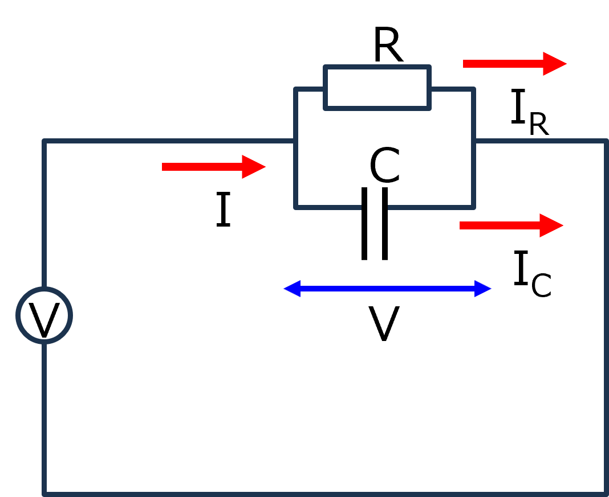
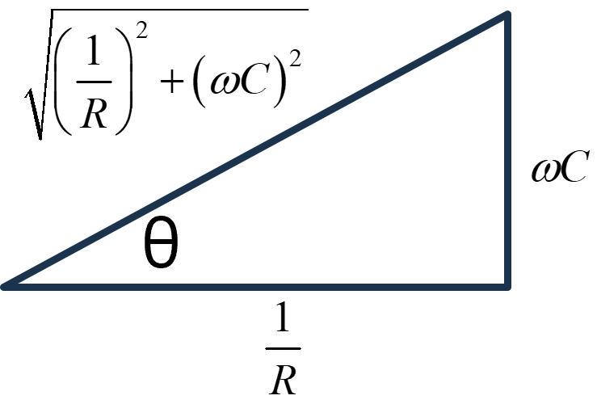
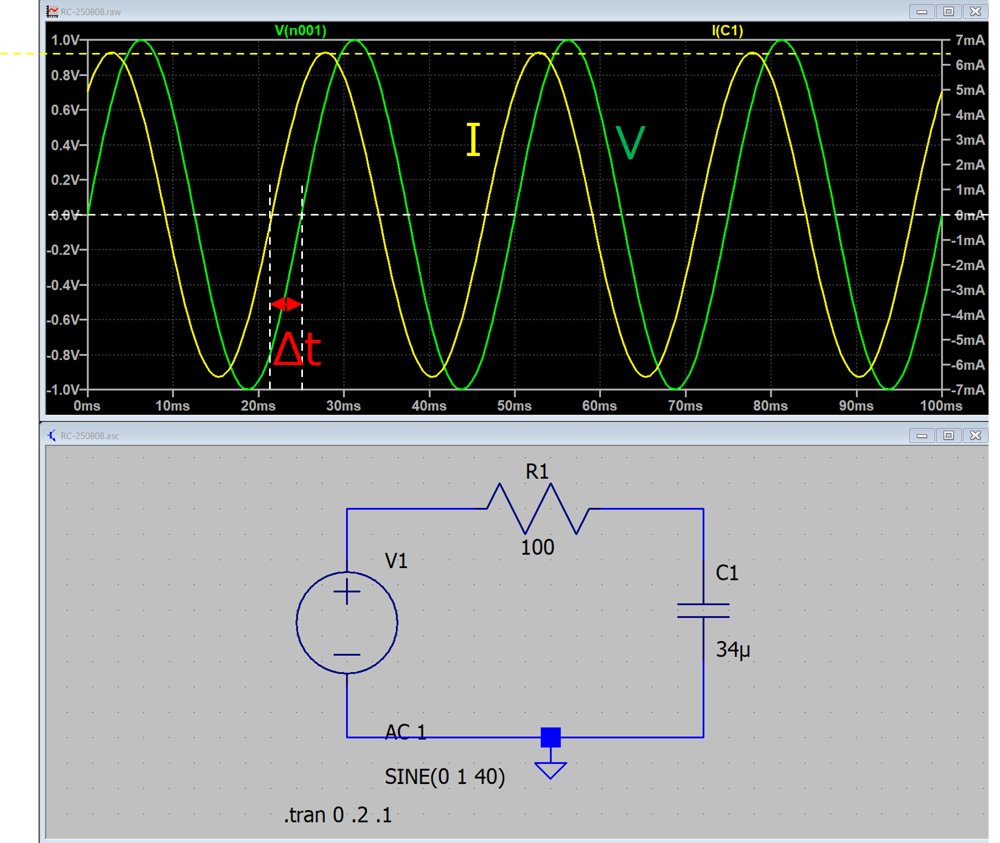

回路-11
RC並列交流回路

RとCが並列に並んだ交流回路を考えます．
交流ですが，インピーダンスを考えれば，直列の抵抗と同じように計算できます．
つまり，交流回路の場合には，コンデンサのインピーダンスを交流回路の場合の抵抗値 と考え，直流の場合と同じように直列の計算をすればいいのです．インピーダンスは，
\(\Large Z_R = R \)
\(\Large Z_C = \displaystyle \frac{1}{j \omega C} \)
となるので，
\(\Large \displaystyle \frac{1}{Z} = \frac{1}{Z_R} + \frac{1}{Z_C} = \displaystyle \frac{1}{R} + j \omega C \)
\(\Large V(t) = Z \cdot I(t) \)
から，
\(\Large I(t) = I_R(t) + I_C(t) = \displaystyle \left( \frac{1}{R} + j \omega C \right) \cdot V_0 \cdot e^{j \omega t} \)
となります．ここで複素平面を考えるために，
\(\Large I(t) = I_R(t) + I_C(t) = \displaystyle \sqrt{\frac{1}{R^2} + ( \omega C)^2} \frac{ \frac{1}{R} + j \omega C }{\sqrt{\frac{1}{R^2} + ( \omega C)^2}} \cdot V_0 \cdot e^{j \omega t} \)
とし，最初の項を，複素平面で，

と考えると，
\(\Large cos \ \theta = \displaystyle \frac{1/R }{\sqrt{\frac{1}{R^2} + ( \omega C)^2}} \)
\(\Large j \ sin \ \theta = \frac{ \displaystyle \omega C}{\sqrt{\frac{1}{R^2} + ( \omega C)^2}} \)
となるので，
\(\Large \displaystyle \frac{ \frac{1}{R} + j \omega C }{\sqrt{\frac{1}{R^2} + ( \omega C)^2}} = cos \ \theta + j \ sin \ \theta = e^{j \ \theta} \)
となります．ここで，
\(\Large tan \ \theta = \displaystyle \omega RC \)
です．したがって，電流は，
\(\Large I(t) = e^{j \ \theta} \cdot \displaystyle \sqrt{\frac{1}{R^2} + ( \omega C)^2} \cdot V_0 \ e^{j \omega t} \)
\(\Large =\displaystyle V_0 \cdot \sqrt{\frac{1}{R^2} + ( \omega C)^2} \cdot e^{j (\omega t + \theta)} \)
となります．ここで，三角関数に戻すために，虚数部分のみ取り出すと，
\(\Large Im[I(t)] = \displaystyle V_0 \cdot \sqrt{\frac{1}{R^2} + ( \omega C)^2} \cdot sin \ (\omega t + \theta) \)
となります．
実際にRC並列交流回路を作ってみてシミュレートしてみました．

条件は，
f = 40 Hz
R = 100 Ω
C = 34 μF
V0 = 1 V
ということで，
\(\Large \omega = 40 \cdot 2 \cdot \pi = 251.3 \ rad/s \)
振幅
コンデンサ直下の電流値の振幅は，
\(\Large \displaystyle V_0 \cdot \sqrt{\frac{1}{R^2} + ( \omega C)^2} = 13.2 \ mA \)
と電流の振幅が計算どおりとなっていることがわかります．
位相
今回は，この計算は使わずに，0点同士の差から求めました．
\(\Large \Delta t = 2.80 \ ms \)
理論値は，
\(\Large tan^{-1} \ \omega R C = 0.707 \ rad \)
周波数は40 Hz，ですので，一周期が，1/40 = 25 ms.
\(\Large \frac{0.707}{ 2 \pi} \times 25 \ ms = 2.81 \ ms \)
とほぼ一致していることがわかります．
次に，RL並列交流回路，について考えていきます．